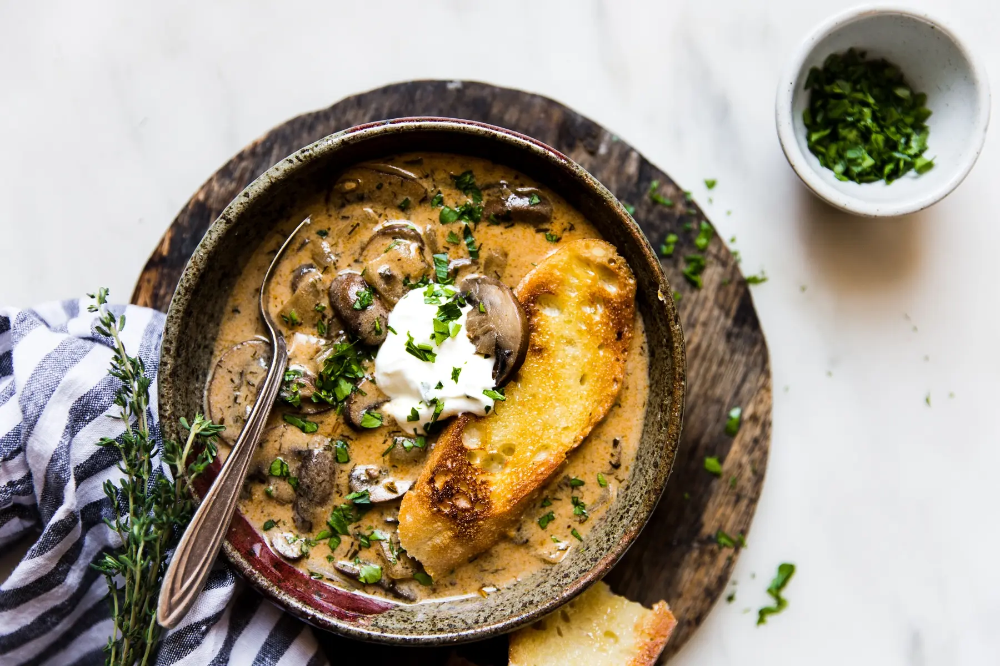

Watermelon Salad

Description
This creamy mushroom soup is spiced with paprika, dill, and thyme. A perfect comfort food for cold winter nights.
Ingredients
- 1/2 cup butter
- 4 cups onions, diced
- 2 lbs mushrooms, sliced
- 3 cloves garlic, minced
- 4 cups vegetable or chicken stock
- 1 cup dry white wine
- 4 tsp dried dill
- 4 tsp fresh thyme leaves, minced
- 4 tsp paprika
- 4 tbsp soy sauce
- 2 cup whole milk
- 6 tbsp flour
- 1/2 cup sour cream
- 4 tbsp lemon juice
- 4 tbsp fresh parsley, chopped
- salt
- pepper
Steps
- To a heavy pot or dutch oven, add butter. Melt over medium heat. Add onions and mushrooms, cooking until the onions are soft and translucent. Add garlic and cook an additional minute.
- Add the dill, thyme, paprika, soy sauce, stock, and wine. Bring to a boil and reduce to a simmer. Cook until the liquid reduced by half.
- Add milk to a small bowl. Whisk flour into milk until smooth. Add milk-flour mixture to soup and cook until the soup begins to thicken.
- Reduce heat to low. Stir in lemon juice and sour cream. Season to taste with salt and pepper.
- Garnish with parsley and additional sour cream. Serve hot. Enjoy!